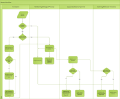
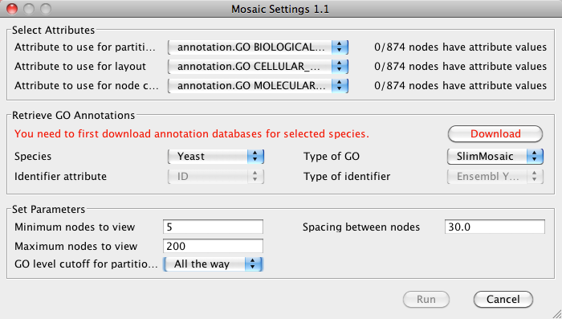
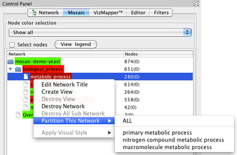
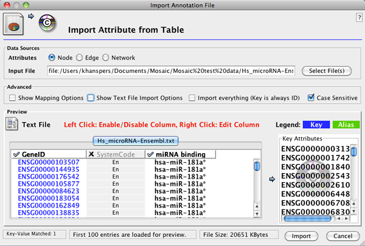
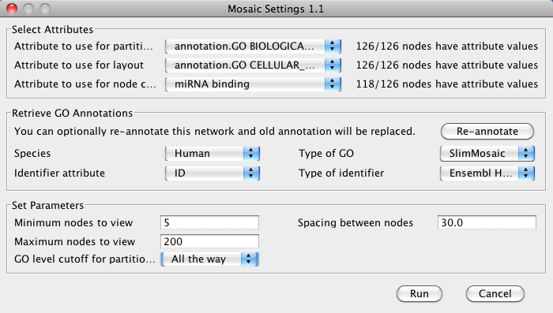
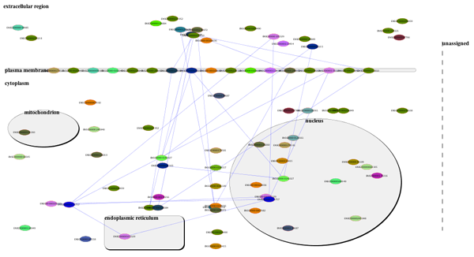

Introduction
Mosaic performs network annotation and
interactive partitioning driven by the
Gene Ontology. The Mosaic
algorithm works by first annotating the network with GO terms, followed
by partitioning the network into a series of subnetworks based on the
biological process annotation of nodes.
Mosaic was created as a
Google
Summer of Code project by Chao Zhang in collaboration with the
National Resource for Network Biology
(NRNB). Please
contact us with
any feedback or questions.
And if you end up using Mosaic in your research, please cite this publication:
Chao Z, Hanspers K, Kuchinsky A, Salomonis N, Xu D, and Pico AR. Mosaic: Making Biological Sense of Complex Networks. Bioinformatics 2012, 28, 14:1943-4.
Mosaic is supported by the National Resource for Network Biology (P41 GM103504).
Download
To install, place the following jar files
in the plugins directory of your
Cytoscape installation:
Version 1.1.
Note that Mosaic requires the CyThesaurus
plugin, version 1.3.1 or higher:
Mosaic is an open
source project. Feel free to contact us
with any questions.
Technical documentation
The Mosaic algorithm workflow is
explained in the below graphic. Click to enlarge.

Running Mosaic
Load network
- Select a network to load under File>Import Network
(Multiple File Types). The network can be in any of the Cytoscape
supported network file formats.
Download sample file: mosaic-demo-yeast.sif (14KB)
Retrieve database and
annotation information
- Start Mosaic by selecting Plugins>Mosaic.

- If this is the first time running Mosaic on your network, you
will see a message in the Retrieve GO Annotations section of the Mosaic interface to download necessary
databases. Click Download to continue. Mosaic will download the
necessary database for your data. It is only necessary to download
datbases once per species.
- Once database download is complete, Mosaic will prompt you to
annotate your network with GO annotation. Click Annotate to
continue. You can save the annotated network as a session file for
future use. You can also re-annotate the network with the latest
annotations from GO at any time by clicking Re-annotate.
Finalizing Mosaic
parameters
- In the Select Attributes section, verify that the
correct attributes are selected.
Note:
It is possible to select node attributes other than GO annotation for
partitiong and node color, but not for layout. Using alternate annotations involves
importing annotation data prior to running Mosaic.
- In the Set Parameters section you can choose several
parameters that will directly affect the results of Mosaic:
- Minimum nodes to view: The minimum
number of nodes in a subnetwork. Any subnetworks with fewer nodes will
not be shown. Default is 5.
- Maximum nodes to view: The maximum number of nodes in a subnetwork.
Any subnetworks with more nodes will not be shown. Default is 200.
- GO level cutoff for partition: The level of the GO hierarchy
used for partitioning into subnetworks. Selecting a deeper level
(larger number) results in a larger number of subnetworks. You can
always drill deeper into a given subnetwork
after running the initial partition. Default is 2. Note that for the
purposes of this manual, GO level cutoff was set for "All the way",
meaning to the deepest possible level of GO.
- Spacing between nodes: Spacing between nodes in a given subnetwork.
Default is 30.
- Click Run to start Mosaic.
Navigating the results
When partitioning is complete,
subnetworks will be displayed as tiles as shown below. In addition to
subnetworks representing GO biological process terms, the display also
includes an
overview network (top left tile) and
the original network (bottom right tile).

In the Mosaic tab in the left-side
Control Panel, all subnetworks will be listed, including subnetworks
that fall outside
defined thresholds.
- To locate a particular subnetwork, select the network in the
Mosaic side panel to highlight it in the tiled view.
- To view a particular subnetwork, click the Maximize
button at the top left of the tiled window.
Subnetwork view
Each subnetwork represents a biological
process and the layout is controlled by cellular component annotation
using a pre-set template. Node coloring is determined by molecular
function annotation, by default.

The network can be manipulated like any
other Cytoscape network:
- Move nodes by click and drag to optimize the layout.
- Delete nodes and/or edges.
- Zoom in and out.
- Use the Network Overview Pane in the lower left corner
of the Cytoscape window to navigate around the network.
- Highlight a set of nodes to view associated attributes in the
Data Panel. To add specific attributes to the display, click the
Select Attributes button in the Data Panel and select the
attributes you want to see from the list.
- Search for specific nodes by typing the name of the node in
the Search field in the Cytoscape toolbar. If the node is found,
this will refocus the network view on the node.
It is also possible to highlight nodes in a selected subnetwork based on
molecular function annotation, using the
Node color selection
menu at the top of the Mosaic tab. With a subnetwork selected, select a
molecular function from the drop-down and all nodes with that annotation
will be highlighted. To display the highlighted nodes in the
Data Panel,
click the
Select nodes button.

Partitioning deeper into
select subnetworks
It is possible to partition a select
branch of the subnetwork tree after an initial analysis is completed.
This works on any non-end branch whos sub-branches did not result in any
subnetworks in the initial partition. For example, if none of the
branches possible subnetworks fall within the node thresholds, the
subnetworks will not be automatically created, but these could still be
paritioned manually using this process.

- Select a non-end branch by clicking on it in the Mosaic tab in
the Control Panel.
- Right-click on the branch and select Partition This
Network. You will be able to select a specific subnetwork to create, or
you can select all.
Note that Mosaic will use the same parameters for paritioning as were
selected in the original analysis.
Overview network
In addition to the subnetworks, an
overview network is also created in which each subnetwork is represented
as a node. The size of each node represents the number of nodes in that
subnetwork, and the line thickness represents the number of connections
between two subnetworks. You can adjust the edge widths using
Viz
Mapper.

In addition to the visual style that is applied to the overview network, the corresponding
attribute values used to create the visual style is available as a set of node and edge attributes.
The attributes are
- evidences: nodes classified in the GO/process (node attribute)
- subnetworkSize: number of nodes classified in the GO/process(node attribute)
- commonEvidences: nodes in common (edge attribute)
- overlapCount: number of nodes in common (edge attribute)
Example usage
Loading alternative annotations for node coloring
Annotations other than GO can be used for partitioning and node coloring in Mosaic. The annotation data can
be imported as node attributes. The below instructions assume that the annotation data is available in a simple text file, and that the
primary identifier in the annotation file is the same as that used for nodes in the network. This example explains how to use information
on predicted miRNA binding site for node coloring.
- After importing a network, go to File>Import>Attribute from Table (Text/MS Excel)... to open the Import Annotation File
interface.
- Select the annotation file. In the Advanced section, select Show Text File Import Options. In the Attribute Names
section, select Transfer first line as attribute names.
- In Advanced, select Show Mapping Options and verify that the correct column in the annotation file is mapped to the
appropriate network attribute (i.e. matching identifiers).
- In the Preview section, deselct columns that you don't want to import by clicking on the column header. The column should be
highlighted in grey if de-selected. The interface should now look like this:

- Click Import to start the import.
- When import is finished, select a few nodes in the network and verify in the Data Table that the annotation was imported correctly.
- Start Mosaic. In the Select Attributes section, select the imported attribute under Attribute to use for node coloring.
Click Annotate to annotate the network with GO for partitioning and layout.

- Each subnetwork will now be colored based on the predicted miRNA binding sites.

Potential issues and error messages
If these descriptions do not help address a problem you are experiencing, please
contact us.
Make sure you only have one copy of Mosaic and CyThesaurus installed.
If you install using the Cytoscape Plugin Manager and also download and install the jars from this website, then there will be conflicts and odd behaviors. This is true for any Cytoscape plugin. You can remove manually installed plugins from the plugin folder in your Cytoscape installation; and you can remove managed plugins from Plugins>Plugins Manager.
Mosaic can not annotate yeast networks using SGD IDs, like S000006332.
Mosaic isn''t able to translate SGD IDs to Ensembl, so the annotation of networks with these IDs fails. We will fix address
this in a future release. In the meantime, work with another identifier (e.g., YPR128C).
Error message: "Please load a network first!"
You must have at least one network loaded in Cytoscape before running Mosaic.
Error message: "CyThesaurus 1.31 or later verion is necessary for runing Mosaic!"
CyThesaurus 1.31 or later version is required by Mosaic for annotating networks and earlier versions might cause inconsistent issues. You can get the latest version at the top of this page. Be sure to uninstall older versions first.
Error message: "You need internet connection for downloading databases."
Mosaic supports many species and cannot distributed them all inside plugin. So, the first time you work with a given species, an internet connection is required to download the species-specific database files. Subsequent runs for this species will work offline.
Error message: "Building *** subnetworks may take a while. Are you sure you want to proceed?"
The message means that the current network contains more than 100 subnetworks and partitioning procedure will take longer. You can decline and then try decreasing the level to which to partition or try reannotating with GOslim (if you were working with GOfull).
Error message: "Selected attribute does not match layout template".
This message appears when the full GO hierarchy is used to annotate nodes, as opposed to Mosaic-specific GO slim. If your network is
already annotated with GO terms, make sure to re-annotate the network in Mosaic, to ensure that the correct GO annotations are used.
{kind=link}